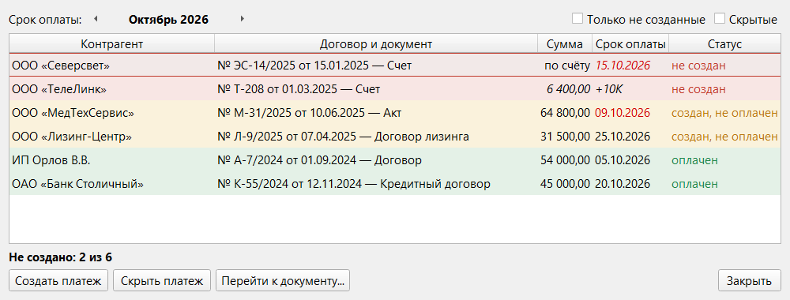

Раздел 8. Ежемесячные платежи |
Для платежей, которые повторяются каждый месяц (аренда, связь, электроэнергия), есть перечень: по нему видно, за какие месяцы платеж уже создан и оплачен, а за какие ещё нет. Недостающий платеж создаётся в два щелчка по образцу прошлых.
Как настроить |
Первый платеж можно создать и до шага 2 (см. «Создание платежа» ниже).
В группе «Ежемесячный платёж» окна документа, кроме отметки, есть два поля:
Архивные контрагенты и договоры в перечень не попадают.
Перечень |
Откройте его кнопкой «Договоры» → стрелка → «Ежемесячные платежи» или клавишами Ctrl+Shift+K. Стрелками рядом с названием месяца (или Ctrl+←, Ctrl+→) выбирается месяц, за который смотрим платежи.

Рис. 24. Окно «Ежемесячные платежи».
Создание платежа |
«Создать платеж» (или двойной щелчок по строке) открывает окно в зависимости от того, сохранены ли для документа поля.
Если поля сохранены, откроется окно «Ежемесячный платёж — <месяц>», такое же, как «Копирование платежа с новым основанием» (раздел 3), но уже заполненное:
Программа предупредит, если срок оплаты выходит за выбранный месяц (такой платеж не попадёт в перечень этого месяца) или если в наименовании несколько названий месяцев и оно не менялось: проверьте его.
Если полей нет, программа сообщит об этом, и откроется окно «Новый платеж», уже привязанное к документу. Заполните его и нажмите «Сохранить поля в договор →», иначе в следующем месяце всё придётся вводить заново.
Если что-то пошло не так |
| Что вы видите | Что случилось | Что делать |
|---|---|---|
| Сообщение «Для быстрого создания платежа заполните сохранённые поля для этого документа.» | Для документа не сохранены поля | «ОК», заполните окно «Новый платеж» и нажмите «Сохранить поля в договор →» (раздел 6) |
| Предупреждение «Срок оплаты выходит за … , поэтому платёж не попадёт в перечень этого месяца.» | Рассчитанный или введённый срок оплаты — в другом месяце | Если это нужно, подтвердите; иначе поправьте срок или дату возникновения |
| Сообщение «Не удалось загрузить перечень ежемесячных платежей (подробности см. в логе)» | Данные не прочитались, перечень пуст | Закройте окно и откройте снова; если не помогло, перезапустите программу |
| Платеж есть, но в перечне за месяц у него статус «не создан» | Срок оплаты платежа в другом месяце или платеж не привязан к документу | Проверьте срок оплаты и привязку (раздел 6) |
| Документа нет в перечне | Не отмечено «Включить документ в перечень ежемесячных платежей», у документа предоплата или срок не определён либо договор или контрагент в архиве | Проверьте окно документа и архив (раздел 6) |